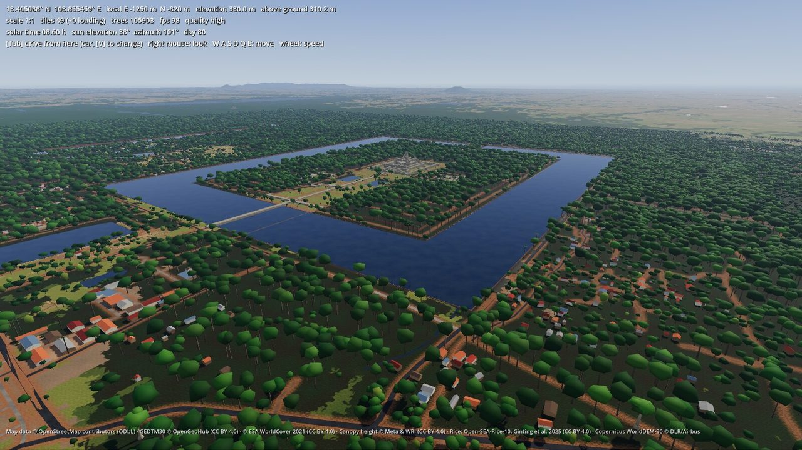

Angkor World Engine
The Angkor region of Cambodia rebuilt in 3D at full scale, one engine unit to one real metre, from open geographic data. Nothing is placed by hand: the moats, causeways, roads, buildings and ponds are mapped geometry at their surveyed positions, the ground is a bare-earth elevation model, and there is one tree for every crown a satellite canopy model shows. A Python pipeline turns the data into a streamed world of 37 × 45 km, and a Godot runtime lets you fly over it or drive it by car, motorcycle, scooter or tuk-tuk, on a PC or an Android phone. Angkor Wat itself is being rebuilt from the survey drawings of the École française d’Extrême-Orient, sheet by sheet, with every figure traced to the drawing it was read on; forty-four other monuments, or parts of them, from the Bayon and the gates of Angkor Thom to Banteay Srei and the Preah Pithu temples, have followed the same way since 19 November, many of them in part.
La région d’Angkor, au Cambodge, reconstruite en 3D en grandeur réelle — une unité du moteur pour un vrai mètre — à partir de données géographiques ouvertes. Rien n’est placé à la main : douves, chaussées, routes, bâtiments et bassins sont la géométrie cartographiée à leur position relevée, le sol est un modèle d’élévation du terrain nu, et il y a un arbre pour chaque houppier que montre un modèle satellite de la canopée. Un pipeline Python transforme les données en un monde de 37 × 45 km chargé à la volée, et un moteur Godot permet de le survoler ou de le parcourir en voiture, à moto, en scooter ou en tuk-tuk, sur PC comme sur un téléphone Android. Angkor Vat lui-même est reconstruit à partir des relevés de l’École française d’Extrême-Orient, planche par planche, chaque cote renvoyant au dessin sur lequel elle a été lue ; quarante-quatre autres monuments, ou parties de monuments, du Bayon et des portes d’Angkor Thom à Banteay Srei et aux temples de Preah Pithu, ont suivi la même voie depuis le 19 novembre, beaucoup en partie seulement.
តំបន់អង្គរ នៃប្រទេសកម្ពុជា ត្រូវបានបង្កើតឡើងវិញជា 3D តាមទំហំពិត — មួយឯកតារបស់ម៉ាស៊ីន ស្មើនឹងមួយម៉ែត្រពិត — ពីទិន្នន័យភូមិសាស្ត្របើកចំហ។ គ្មានអ្វីត្រូវបានដាក់ដោយដៃទេ៖ គូទឹក ផ្លូវថ្ម ផ្លូវថ្នល់ អគារ និងស្រះ គឺជាធរណីមាត្រពីផែនទី នៅទីតាំងដែលបានវាស់វែង ផ្ទៃដីមកពីគំរូកម្ពស់ដី ហើយមានដើមឈើមួយដើម សម្រាប់ម្កុដឈើនីមួយៗ ដែលគំរូគម្របព្រៃពីផ្កាយរណបបង្ហាញ។ កម្មវិធី Python បំប្លែងទិន្នន័យទៅជាពិភពលោកទំហំ 37 × 45 គីឡូម៉ែត្រ ដែលផ្ទុកបន្តិចម្តងៗ ហើយម៉ាស៊ីន Godot អនុញ្ញាតឱ្យហោះពីលើ ឬបើកបរដោយរថយន្ត ម៉ូតូ ម៉ូតូស្កូទ័រ ឬរ៉ឺម៉ក លើកុំព្យូទ័រ ឬទូរស័ព្ទ Android។ ចំណែកប្រាសាទអង្គរវត្តវិញ កំពុងត្រូវបានសាងសង់ឡើងវិញ ពីប្លង់វាស់វែងរបស់សាលាបារាំងចុងបូព៌ា (EFEO) មួយសន្លឹកម្តងៗ ដោយតួលេខនីមួយៗ អាចតាមដានទៅដល់ប្លង់ដែលវាត្រូវបានអាន។ ចាប់តាំងពីថ្ងៃទី 19 ខែវិច្ឆិកា បូជនីយដ្ឋាន ឬផ្នែកនៃបូជនីយដ្ឋាន សែសិបបួនផ្សេងទៀត ចាប់ពីប្រាសាទបាយ័ន និងខ្លោងទ្វារនៃអង្គរធំ រហូតដល់បន្ទាយស្រី និងប្រាសាទព្រះពិធូ ត្រូវបានសាងសង់តាមរបៀបដូចគ្នា ដែលជាច្រើនក្នុងចំណោមនោះ នៅមិនទាន់ពេញលេញ។

Angkor, from the data.
A reusable engine for driving games and simulations set in a real place. Open datasets are fetched, imported into a geographic database, validated and baked into tiles; every feature keeps a record of where it came from and how sure it is, and whatever had to be estimated is marked as such, in the code and in reports generated from the data.
The world is built at 1:1 throughout: terrain, roads, temples, vehicles, physics and camera all work in real metres, so a journey takes as long as it would on the ground. The region baked today runs from the West Baray to Roluos and the shore of the Tonle Sap, Siem Reap included: 1,665 tiles of one square kilometre each.
Every layer has a source.
| Layer | Source | In the world |
|---|---|---|
| Terrain | GEDTM30 elevation model | 30 m data on a 5 m grid; Phnom Bakheng’s hill kept |
| Roads | OpenStreetMap | 5,343 km at their real alignment, by class and surface |
| Buildings | OpenStreetMap | 95,487 footprints: village houses on stilts; in the towns, shophouses of two to four storeys along the main roads and named streets, and two-storey detached houses inside the blocks; in Siem Reap’s old quarter round the Old Market, colonnaded shophouses under shared tiled roofs; pagodas with two-tier roofs; windows lit at night |
| Trees | Meta / WRI canopy height, 1.2 m | 2.18 million trees, each at the position, height and width of a crown seen from space |
| Fields | ESA WorldCover, Open-SEA-Rice-10 | Cropland and rice: 30 % of the region, dry or flooded with the season |
| Water | OpenStreetMap, Copernicus DEM | Moats, barays, rivers and canals, each body at its own level |
| Street and village life | Inferred, none of it mapped | 52,150 shop-front parts (awnings, signs, balconies), 23,149 power poles with their wires, 17,637 parked two-wheelers; round the houses on stilts, stairs, benches, rain jars, hammocks, fences, zebu cows, 64,450 hens and 10,238 dogs. None of them moves; only the traffic on the roads round the player does |
| Monuments | OpenStreetMap, Wikidata, EFEO survey drawings, published surveys | 287 archaeological entries; 45 monuments or parts of monuments with a dedicated model: Angkor Wat, eight temple-mountains and thirty-six others built wholly or in part from the survey drawings, among them the Bayon, Banteay Srei, Banteay Kdei, Preah Khan, Ta Prohm, Ta Som and the five gates of Angkor Thom |
| Temple stone | EFEO survey drawings, published measurements | Courses and blocks drawn by a shader to each temple’s measured sizes (Angkor Wat’s sandstone courses 0.40 to 0.52 m, Pre Rup’s brick courses 80 mm); Angkor Wat’s roofs carved as rows of tiles 0.41 m apart; the Bayon’s courses measured on its tower 28 and drawn in its own weathered stone, set by eye; the faces of its towers carved as reliefs on a 2 cm grid |
Fly over it, drive through it.
The whole region at 1:1
Tiles load and unload around you without long stalls, and a coarse far terrain with the larger monuments carries the landscape to the horizon. On a 43 km flight at 900 km/h, streaming keeps up and no frame takes over 100 ms.
Forty-five monuments from the survey
Angkor Wat, rebuilt from the EFEO’s survey drawings (below); eight temple-mountains — Phnom Bakheng, Baksei Chamkrong, Bakong, Pre Rup, the East Mebon, Ta Keo, Phimeanakas and the Baphuon —, their tiers and towers now set from the EFEO’s sheets, no tower drawn by a proportion rule any more; and, since 19 November, thirty-six others built wholly or in part from their own sheets, among them the Bayon (below), Banteay Srei, Banteay Kdei, Banteay Samre, Preah Khan, Ta Prohm, Ta Som, Thommanon, Neak Pean, the five Preah Pithu temples, the Terraces of the Elephants and of the Leper King and the five gates of Angkor Thom. Many are partial; every other monument is still its mapped footprints raised to a height.
Five vehicles from real figures
A car (Toyota Corolla), a motorcycle (Honda CRF250 Rally), a scooter (Honda Vario 125), the three-wheeled auto-rickshaw (Bajaj RE) and the Cambodian remorque, a motorcycle towing a carriage. Each has its own physics, set from the maker’s figures and within about 7 % of a published road test.
Weather and night
Clear, overcast or rain, with roads that get wet, lose a third of their grip and dry again. The sun follows the solar time and the season; at night the only lights are the vehicles’ head and tail lamps, the street lamps along the towns’ main streets, one every 21.6 m on 95.5 km of Siem Reap’s streets, and the lit windows of Siem Reap.
A geographic editor
Inspect any road, building or site and its source, see what validation found, and correct it: a road’s width, surface or line, the outline of a building or of water, a site’s position, or add what the map lacks. Only the tiles concerned are baked again, in about 12 seconds.
On a phone
A 200 MB Android package holds the whole region. On a Samsung Galaxy A56 it runs at 111 fps on the low preset, 76 on medium and 65 on high, with an on-screen steering pad and pedals, tilt steering or a gamepad, and chase, close, driver’s-eye and cinematic views.
Rebuilt drawing by drawing.
Since 18 November, Angkor Wat is being rebuilt from the survey drawings of the École française d’Extrême-Orient’s Conservation d’Angkor: plans, sections and elevations drawn at 1/500 to 1/20 between 1900 and 1971, 2,621 sheets for the Angkor monuments, published under CC BY 4.0. The 1971 general plan is fitted onto the map, its lines a median 0.25 m from the mapped ones, and about seventy sheets are registered on it or scaled from it. Every figure the model takes is recorded with its sheet, how it was read and its uncertainty; a part with no drawing of its own is copied from its measured twin and marked as transferred.
The drawings correct the figures usually quoted: the central tower stands 57.4 m above the west esplanade on every sheet, not 65 m, and the four corner towers are 45.4 m high and 48 m apart, not the 43 m and 50 m mapped. The temple stands on its raised platform, 1.49 m above the park, each part set at the level of the temple’s levelling plan.
The central massif
The upper level on its outline from the 1971 plan, with its moulded tiers and sunken courts; twelve stairs of 29 risers of 0.365 m; the five towers from silhouettes measured at 1/50; its gopuras, cruciform galleries and porches; and the square gallery, swept from its 1/20 section and walkable inside.
The second level
The platform with its moulded profile; the gallery, gopuras, corner pavilions and libraries; the eleven outer flights of 22 risers and the pillared porches they lead to; and the stair halls that climb from the cloister up to it, read on a section whose scale was fixed by the step lines of the plan.
The gallery of the bas-reliefs
Its eight long runs, swept from a 1947 section at 1/40, the first sheet found with written dimensions; its gopuras, corner pavilions, the cruciform cloister and the libraries of the first court, on 1/50 plans; and the cruciform terrace in front of it, with the lion terraces round its three stairs.
The west entrance and the causeways
The west entrance, about 231 m long, with its three ruined towers, their porches, flights and lions’ landings, the long galleries from their 1/20 section and the elephant gates; the outer causeway with its three landings and its naga rail on 200 posts; the inner causeway with its landings, and the two libraries beside it.
The fourth enclosure
The laterite wall, 1,025 × 800 m: its 1/20 section swept along the mapped line, to 4.57 m, where it was a default wall 4.5 m high; and its north and south gopuras, which the map left as two empty 40 m gaps.
Checked by tests
Automated checks run on every massing: no flight hidden inside the stone it climbs (the first run found 77), every flight leads to a floor, every pillar carries something, every roof rests on something, every massing builds. No tree grows on the measured stonework: 13 mapped trees there are left out as mapping slips.
Faces in the stone.
Since 19 November the Bayon is built from the EFEO’s drawings of it: its levelling plan, its 1/50 plans, faces and sections, and the sheets at 1/20 that draw some of its towers stone by stone. Since 22 November its towers stand on their own cut outlines and carry their faces, carved as reliefs; the gates of Angkor Thom followed on 23 November. Every face that is not read on its own drawing is a copy of a surveyed one, and is marked so.
Thirty-one towers with their faces
Most towers are read on a section that cuts them or a face that draws them — their tiers, false storeys and lotus crown —, and the court towers no section cuts take their twins’ heights. The faces are reliefs on a 2 cm grid, their depth taken from the tower’s outline. Tower 28, drawn stone by stone at 1/20, gave the first; ten faces are read on their own drawings, the others transferred from tower 28.
The central tower
Its eight face towers carry 24 faces, three each and none towards the centre, as the JSA’s Bayon Master Plan describes; above them the tower follows the axial section’s cut outline break by break. Its body below has six false windows, each with two jambs and three balusters, from the 1/50 plan.
The upper terrace
The central massif’s foot is built hollow from its 1946 base plan and the 1/50 plan: sixteen chapels round the sanctuary, doors open under their lintels, windows with balusters, and the ring of free pillars on its ledge. Edifices 12 to 16 and 21 and tower 20’s pavilion are built on their walls from the 1/50 plan, their heights from their own 1/20 sheets or from a twin’s.
Its own stone
Courses and blocks at the sizes measured on tower 28’s two stone-by-stone faces: 2,090 course heights with a median of 0.24 to 0.28 m, 1,426 block lengths with a median of 0.42 m. Its weathering — greyer stone, a black crust in streaks, pale lichen — is set by eye, and said so: no source read measures a colour.
The gates of Angkor Thom
The five gates from the EFEO’s survey of the East Gate: the wings, the vault over the passage and three towers tier by tier, four faces to a gate (tower 28’s, 1.40 times larger, transferred) and the elephants as three trunks under one mass. The South Gate stands under its crown of 1944, to 22.62 m.
The South Gate’s causeway
106.90 m across the moat, 15.76 to 16.29 m wide over its two retaining walls, every figure written on five cross sections of 1962 and 1963; the walls built course by course, the moat’s stepped banks at its two ends, and 54 giants a side as envelopes, their number after Zhou Daguan as Glaize gives it.
An early, working prototype.
The pipeline, the region, streaming, the vehicles, the editor and the temple models work and are tested. The art is still placeholder: the temples are architectural massing, many of their roofs plain slopes from eave to ridge, with no bas-reliefs or crestings and no carving but the faces of the Bayon’s towers and of Angkor Thom’s gates; their stone is drawn by a shader, and nothing is textured yet. The streets and villages now have their everyday objects — shop fronts, power lines, parked motorbikes, food carts, people on plastic stools, cows, hens and dogs — inferred, not mapped, and none of them moves; only the traffic does. Angkor Wat is rebuilt from its survey drawings, what remains listed as open questions. Since 19 November forty-four other monuments, or parts of them, have followed from their own sheets, many of them in part; none has been checked against the monument itself or a modern survey. Ahead lie, at the Bayon, the bodies of the other towers below their roofs, the galleries’ roofs and pillars and the south wing’s towers, for which no sheet has been found; the rest of the temples begun; Preah Ko, whose sheets have no elevation or section, and Krol Ko, which has no plan; recorded sound, and a measurement on an entry-level phone.
Angkor, à partir des données.
Un moteur réutilisable pour des jeux de conduite et des simulations situés dans un lieu réel. Des jeux de données ouverts sont téléchargés, importés dans une base géographique, validés puis précalculés en tuiles ; chaque élément garde la trace de sa provenance et de son degré de certitude, et tout ce qui a dû être estimé est signalé comme tel, dans le code et dans des rapports générés à partir des données.
Le monde est construit à l’échelle 1:1 de bout en bout : relief, routes, temples, véhicules, physique et caméra travaillent en mètres réels, si bien qu’un trajet dure aussi longtemps que sur le terrain. La région précalculée aujourd’hui va du Baray occidental à Roluos et à la rive du Tonlé Sap, Siem Reap compris : 1 665 tuiles d’un kilomètre carré chacune.
Chaque couche a sa source.
| Couche | Source | Dans le monde |
|---|---|---|
| Relief | Modèle d’élévation GEDTM30 | Données à 30 m sur une grille de 5 m ; la colline du Phnom Bakheng préservée |
| Routes | OpenStreetMap | 5 343 km sur leur tracé réel, par catégorie et revêtement |
| Bâtiments | OpenStreetMap | 95 487 emprises : maisons de village sur pilotis ; en ville, compartiments de deux à quatre étages le long des grands axes et des rues nommées, et maisons individuelles à deux niveaux au cœur des îlots ; dans le vieux quartier de Siem Reap, autour du Vieux Marché, compartiments à galeries sous des toits de tuiles partagés ; pagodes aux toits à deux pans superposés ; fenêtres éclairées la nuit |
| Arbres | Hauteur de canopée Meta / WRI, 1,2 m | 2,18 millions d’arbres, chacun à la position, à la hauteur et à la largeur d’un houppier vu de l’espace |
| Cultures | ESA WorldCover, Open-SEA-Rice-10 | Terres cultivées et rizières : 30 % de la région, sèches ou inondées selon la saison |
| Eau | OpenStreetMap, MNT Copernicus | Douves, barays, rivières et canaux, chaque plan d’eau à son propre niveau |
| Vie des rues et des villages | Déduite, rien n’est cartographié | 52 150 éléments de devantures (auvents, enseignes, balcons), 23 149 poteaux électriques avec leurs fils, 17 637 deux-roues garés ; autour des maisons sur pilotis, escaliers, bancs, jarres à eau de pluie, hamacs, clôtures, zébus, 64 450 poules et 10 238 chiens. Aucun ne bouge ; seule la circulation roule sur les routes autour du joueur |
| Monuments | OpenStreetMap, Wikidata, plans et coupes de l’EFEO, relevés publiés | 287 entrées archéologiques ; 45 monuments ou parties de monuments dotés d’un modèle dédié : Angkor Vat, huit temples-montagnes et trente-six autres bâtis en tout ou en partie d’après les relevés, dont le Bayon, Banteay Srei, Banteay Kdei, Preah Khan, Ta Prohm, Ta Som et les cinq portes d’Angkor Thom |
| Pierre des temples | Plans et coupes de l’EFEO, mesures publiées | Assises et blocs dessinés par un shader aux dimensions mesurées de chaque temple (assises de grès de 0,40 à 0,52 m à Angkor Vat, assises de briques de 80 mm à Pre Rup) ; toits d’Angkor Vat taillés en rangs de tuiles espacés de 0,41 m ; assises du Bayon mesurées sur sa tour 28 et dessinées dans sa propre pierre patinée, réglée à l’œil ; visages de ses tours sculptés en relief sur une grille de 2 cm |
Le survoler, le parcourir.
Toute la région à l’échelle 1:1
Les tuiles se chargent et se libèrent autour de vous sans longs à-coups, et un relief lointain simplifié, avec les plus grands monuments, prolonge le paysage jusqu’à l’horizon. Sur un vol de 43 km à 900 km/h, le chargement suit et aucune image ne dépasse 100 ms.
Quarante-cinq monuments d’après les relevés
Angkor Vat, reconstruit d’après les relevés de l’EFEO (ci-dessous) ; huit temples-montagnes — Phnom Bakheng, Baksei Chamkrong, Bakong, Pre Rup, le Mébon oriental, Ta Keo, Phimeanakas et le Baphuon —, leurs gradins et leurs tours désormais tirés des planches de l’EFEO, plus aucune tour n’étant dessinée selon une règle de proportion ; et, depuis le 19 novembre, trente-six autres bâtis en tout ou en partie d’après leurs propres planches, dont le Bayon (ci-dessous), Banteay Srei, Banteay Kdei, Banteay Samre, Preah Khan, Ta Prohm, Ta Som, Thommanon, Neak Pean, les cinq temples de Preah Pithu, les terrasses des Éléphants et du Roi lépreux et les cinq portes d’Angkor Thom. Beaucoup sont partiels ; tous les autres monuments restent des emprises cartographiées élevées à une hauteur.
Cinq véhicules aux chiffres réels
Une voiture (Toyota Corolla), une moto (Honda CRF250 Rally), un scooter (Honda Vario 125), le tricycle motorisé (Bajaj RE) et la remorque cambodgienne, une moto qui tire une carriole. Chacun a sa propre physique, réglée sur les données du constructeur et à environ 7 % près d’un essai routier publié.
Météo et nuit
Temps clair, couvert ou pluie, avec des routes qui se mouillent, perdent un tiers de leur adhérence puis sèchent. Le soleil suit l’heure solaire et la saison ; la nuit, les seules lumières sont les phares et les feux des véhicules, les réverbères des grandes rues des villes, un tous les 21,6 m sur 95,5 km de rues de Siem Reap, et les fenêtres éclairées de Siem Reap.
Un éditeur géographique
Inspectez une route, un bâtiment ou un site et sa source, voyez ce qu’a relevé la validation, et corrigez : largeur, revêtement ou tracé d’une route, contour d’un bâtiment ou d’un plan d’eau, position d’un site, ou ajoutez ce qui manque à la carte. Seules les tuiles concernées sont recalculées, en une douzaine de secondes.
Sur un téléphone
Un paquet Android de 200 Mo contient toute la région. Sur un Samsung Galaxy A56, il tourne à 111 i/s en qualité basse, 76 en moyenne et 65 en haute, avec volant et pédales à l’écran, direction par inclinaison ou manette, et des vues poursuite, rapprochée, conducteur et cinématique.
Reconstruit dessin par dessin.
Depuis le 18 novembre, Angkor Vat est reconstruit à partir des relevés de la Conservation d’Angkor de l’École française d’Extrême-Orient : plans, coupes et élévations dessinés du 1/500 au 1/20 entre 1900 et 1971, 2 621 planches pour les monuments d’Angkor, publiées sous licence CC BY 4.0. Le plan général de 1971 est calé sur la carte, ses traits à 0,25 m en médiane des tracés cartographiés, et environ soixante-dix planches sont calées sur lui ou mises à l’échelle d’après lui. Chaque cote reprise par le modèle est enregistrée avec sa planche, la manière dont elle a été lue et son incertitude ; une partie sans dessin propre est copiée de sa jumelle mesurée et signalée comme transférée.
Les dessins corrigent les chiffres habituellement cités : la tour centrale culmine à 57,4 m au-dessus de l’esplanade ouest sur toutes les planches, et non à 65 m, et les quatre tours d’angle font 45,4 m de haut et sont espacées de 48 m, et non les 43 m et 50 m de la carte. Le temple repose sur sa terrasse, 1,49 m au-dessus du parc, chaque partie placée au niveau du plan de nivellement du temple.
Le massif central
Le niveau supérieur sur son contour du plan de 1971, avec ses gradins moulurés et ses cours en creux ; douze escaliers de 29 marches de 0,365 m ; les cinq tours d’après des silhouettes mesurées au 1/50 ; ses gopuras, galeries cruciformes et porches ; et la galerie carrée, extrudée d’après sa coupe au 1/20, que l’on peut parcourir à l’intérieur.
Le deuxième niveau
La terrasse et son profil mouluré ; la galerie, les gopuras, les pavillons d’angle et les bibliothèques ; les onze volées extérieures de 22 marches et les porches à piliers auxquels elles mènent ; et les salles d’escalier qui y montent depuis le cloître, lues sur une coupe dont l’échelle a été fixée par les marches du plan.
La galerie des bas-reliefs
Ses huit longues ailes, extrudées d’après une coupe de 1947 au 1/40, la première planche trouvée avec des cotes écrites ; ses gopuras, ses pavillons d’angle, le cloître cruciforme et les bibliothèques de la première cour, d’après des plans au 1/50 ; et la terrasse cruciforme devant elle, avec les terrasses aux lions autour de ses trois escaliers.
L’entrée ouest et les chaussées
L’entrée ouest, longue d’environ 231 m, avec ses trois tours ruinées, leurs porches, leurs volées et leurs paliers aux lions, les longues galeries d’après leur coupe au 1/20 et les portes des éléphants ; la chaussée extérieure avec ses trois paliers et sa balustrade en naga sur 200 poteaux ; la chaussée intérieure avec ses paliers, et les deux bibliothèques qui la bordent.
La quatrième enceinte
Le mur de latérite, 1 025 × 800 m : sa coupe au 1/20 extrudée le long du tracé cartographié, jusqu’à 4,57 m, là où se dressait un mur par défaut de 4,5 m ; et ses gopuras nord et sud, que la carte laissait en deux brèches vides de 40 m.
Vérifié par des tests
Des contrôles automatiques passent sur chaque volume : aucune volée enfouie dans la pierre qu’elle gravit (la première passe en a trouvé 77), chaque volée mène à un sol, chaque pilier porte quelque chose, chaque toit repose sur quelque chose, chaque volume se construit. Aucun arbre ne pousse sur la maçonnerie relevée : 13 arbres cartographiés à cet endroit sont écartés comme erreurs de saisie.
Des visages dans la pierre.
Depuis le 19 novembre, le Bayon est bâti d’après les dessins qu’en a faits l’EFEO : son plan de nivellement, ses plans, élévations et coupes au 1/50, et les planches au 1/20 qui dessinent certaines de ses tours pierre par pierre. Depuis le 22 novembre, ses tours se dressent sur leurs propres profils de coupe et portent leurs visages, sculptés en relief ; les portes d’Angkor Thom ont suivi le 23 novembre. Tout visage qui n’est pas lu sur son propre dessin est la copie d’un visage relevé, et signalé comme tel.
Trente et une tours et leurs visages
La plupart des tours sont lues sur une coupe qui les tranche ou une élévation qui les dessine — leurs étages, leurs faux étages et leur couronne en lotus —, et les tours des cours qu’aucune coupe ne tranche prennent les hauteurs de leurs jumelles. Les visages sont des reliefs sur une grille de 2 cm, leur profondeur tirée du profil de la tour. La tour 28, dessinée pierre par pierre au 1/20, a donné les premiers ; dix visages sont lus sur leurs propres dessins, les autres transférés de la tour 28.
La tour centrale
Ses huit tours à visages portent 24 visages, trois chacune et aucun tourné vers le centre, comme le décrit le Bayon Master Plan de la JSA ; au-dessus, la tour suit le profil de la coupe axiale, ressaut par ressaut. Son corps, plus bas, a six fausses fenêtres, chacune à deux montants et trois balustres, d’après le plan au 1/50.
La terrasse supérieure
Le pied du massif central est bâti creux d’après son plan de base de 1946 et le plan au 1/50 : seize chapelles autour du sanctuaire, des portes ouvertes sous leurs linteaux, des fenêtres à balustres, et l’anneau de piliers isolés sur son ressaut. Les édifices 12 à 16 et 21 et le pavillon de la tour 20 sont bâtis sur leurs murs d’après le plan au 1/50, leurs hauteurs tirées de leurs propres planches au 1/20 ou de celles d’un jumeau.
Sa propre pierre
Assises et blocs aux dimensions mesurées sur les deux élévations pierre par pierre de la tour 28 : 2 090 hauteurs d’assise d’une médiane de 0,24 à 0,28 m, 1 426 longueurs de bloc d’une médiane de 0,42 m. Sa patine — une pierre plus grise, une croûte noire en coulures, des lichens pâles — est réglée à l’œil, et c’est dit : aucune source lue ne mesure une couleur.
Les portes d’Angkor Thom
Les cinq portes d’après le relevé de la porte Est par l’EFEO : les ailes, la voûte au-dessus du passage et trois tours étage par étage, quatre visages par porte (ceux de la tour 28, agrandis 1,40 fois, transférés) et les éléphants en trois trompes sous une seule masse. La porte Sud se dresse sous sa couronne de 1944, jusqu’à 22,62 m.
La chaussée de la porte Sud
106,90 m à travers les douves, 15,76 à 16,29 m de large sur ses deux murs de soutènement, chaque cote écrite sur cinq coupes transversales de 1962 et 1963 ; les murs bâtis assise par assise, les berges en gradins des douves à ses deux extrémités, et 54 géants de chaque côté en volumes enveloppes, leur nombre d’après Zhou Daguan cité par Glaize.
Un premier prototype qui fonctionne.
Le pipeline, la région, le chargement à la volée, les véhicules, l’éditeur et les modèles de temples fonctionnent et sont testés. Les graphismes restent provisoires : les temples sont des volumes architecturaux, avec bien des toits en simples pentes de l’égout au faîte, sans bas-reliefs ni crêtes, et sans autres sculptures que les visages des tours du Bayon et des portes d’Angkor Thom ; leur pierre est dessinée par un shader, et rien n’est encore texturé. Les rues et les villages ont désormais leurs objets du quotidien — devantures, lignes électriques, motos garées, charrettes de cuisine de rue, gens sur des tabourets en plastique, vaches, poules et chiens —, déduits et non cartographiés, et rien ne bouge, hormis la circulation. Angkor Vat est reconstruit d’après ses relevés, ce qui reste étant consigné comme questions ouvertes. Depuis le 19 novembre, quarante-quatre autres monuments, ou parties de monuments, ont suivi d’après leurs propres planches, beaucoup en partie seulement ; aucun n’a été comparé au monument lui-même ni à un relevé moderne. Restent à faire, au Bayon, le corps des autres tours sous leurs toits, les toits et les piliers des galeries et les tours de l’aile sud, pour lesquelles aucune planche n’a été trouvée ; le reste des temples entamés ; Preah Ko, dont les planches n’ont ni élévation ni coupe, et Krol Ko, qui n’a pas de plan ; le son enregistré, et une mesure sur un téléphone d’entrée de gamme.
អង្គរ ពីទិន្នន័យពិត។
ម៉ាស៊ីនមួយដែលអាចប្រើឡើងវិញបាន សម្រាប់ហ្គេមបើកបរ និងការក្លែងធ្វើ នៅក្នុងទីកន្លែងពិត។ ទិន្នន័យបើកចំហត្រូវបានទាញយក នាំចូលទៅក្នុងមូលដ្ឋានទិន្នន័យភូមិសាស្ត្រ ត្រួតពិនិត្យ ហើយរៀបចំជាក្រឡា (tiles)។ ធាតុនីមួយៗរក្សាកំណត់ត្រាអំពីប្រភព និងកម្រិតភាពប្រាកដរបស់វា ហើយអ្វីដែលត្រូវប៉ាន់ស្មាន ត្រូវបានសម្គាល់យ៉ាងច្បាស់ ទាំងក្នុងកូដ និងក្នុងរបាយការណ៍ដែលបង្កើតចេញពីទិន្នន័យ។
ពិភពលោកនេះត្រូវបានសាងសង់តាមមាត្រដ្ឋាន 1:1 ទាំងស្រុង៖ ផ្ទៃដី ផ្លូវ ប្រាសាទ យានយន្ត រូបវិទ្យា និងកាមេរ៉ា សុទ្ធតែគិតជាម៉ែត្រពិត ដូច្នេះការធ្វើដំណើរមួយចំណាយពេលដូចនៅលើដីពិតដែរ។ តំបន់ដែលបានរៀបចំរួចនាពេលនេះ លាតសន្ធឹងពីបារាយណ៍ខាងលិច ដល់រលួស និងមាត់បឹងទន្លេសាប រួមទាំងក្រុងសៀមរាបផង៖ ក្រឡាចំនួន 1 665 ដែលនីមួយៗមានទំហំមួយគីឡូម៉ែត្រការ៉េ។
ស្រទាប់នីមួយៗមានប្រភពរបស់វា។
| ស្រទាប់ | ប្រភព | ក្នុងពិភពលោក |
|---|---|---|
| ផ្ទៃដី | គំរូកម្ពស់ដី GEDTM30 | ទិន្នន័យ 30 ម៉ែត្រ លើក្រឡាចត្រង្គ 5 ម៉ែត្រ ដោយរក្សាភ្នំបាខែងទុក |
| ផ្លូវ | OpenStreetMap | 5 343 គីឡូម៉ែត្រ តាមខ្សែផ្លូវពិត តាមប្រភេទ និងផ្ទៃផ្លូវ |
| អគារ | OpenStreetMap | អគារ 95 487៖ ផ្ទះឈើខ្ពស់នៅតាមភូមិ។ នៅក្នុងក្រុង ផ្ទះល្វែងពីរទៅបួនជាន់ តាមបណ្តោយផ្លូវធំៗ និងផ្លូវដែលមានឈ្មោះ និងផ្ទះពីរជាន់ដាច់ដោយឡែក នៅខាងក្នុងប្លុក។ នៅសង្កាត់ចាស់ក្រុងសៀមរាប ជុំវិញផ្សារចាស់ ផ្ទះល្វែងមានច្រកដើរមានសសរ ក្រោមដំបូលក្បឿងរួមគ្នា។ វត្តដែលមានដំបូលពីរជាន់ និងបង្អួចមានភ្លើងនៅពេលយប់ |
| ដើមឈើ | កម្ពស់គម្របព្រៃ Meta / WRI ភាពច្បាស់ 1.2 ម៉ែត្រ | ដើមឈើ 2.18 លានដើម នីមួយៗនៅទីតាំង កម្ពស់ និងទទឹងនៃម្កុដឈើ ដែលមើលឃើញពីលំហ |
| ដីស្រែចម្ការ | ESA WorldCover, Open-SEA-Rice-10 | ដីដាំដុះ និងវាលស្រែ៖ 30 % នៃតំបន់ ស្ងួត ឬលិចទឹកតាមរដូវ |
| ទឹក | OpenStreetMap, Copernicus DEM | គូទឹក បារាយណ៍ ស្ទឹង និងប្រឡាយ ដែលនីមួយៗមានកម្រិតទឹករបស់ខ្លួន |
| ជីវិតតាមផ្លូវ និងភូមិ | សន្និដ្ឋានតាមច្បាប់ គ្មានអ្វីមួយមកពីផែនទីទេ | ផ្នែកមុខហាង 52 150 (តង់ ស្លាកយីហោ យ៉រ) បង្គោលភ្លើង 23 149 ជាមួយខ្សែរបស់វា និងម៉ូតូចត 17 637 គ្រឿង។ នៅជុំវិញផ្ទះឈើខ្ពស់៖ ជណ្តើរ គ្រែ ពាងទឹកភ្លៀង អង្រឹង របង គោ មាន់ 64 450 ក្បាល និងឆ្កែ 10 238 ក្បាល។ វត្ថុទាំងនេះមិនកម្រើកទេ មានតែចរាចរណ៍ ដែលបើកបរនៅលើផ្លូវជុំវិញអ្នកលេង |
| បូជនីយដ្ឋាន | OpenStreetMap, Wikidata, ប្លង់វាស់វែងរបស់ EFEO, ការវាស់វែងដែលបានបោះពុម្ព | ទីតាំងបុរាណវិទ្យា 287 និងបូជនីយដ្ឋាន ឬផ្នែកនៃបូជនីយដ្ឋាន 45 ដែលមានគំរូផ្ទាល់ខ្លួន៖ អង្គរវត្ត ប្រាសាទភ្នំប្រាំបី និងសាមសិបប្រាំមួយផ្សេងទៀត ដែលសាងសង់ទាំងស្រុង ឬមួយផ្នែក ពីប្លង់វាស់វែង ក្នុងនោះមាន បាយ័ន បន្ទាយស្រី បន្ទាយក្តី ព្រះខ័ន តាព្រហ្ម តាសោម និងខ្លោងទ្វារទាំងប្រាំនៃអង្គរធំ |
| ថ្មប្រាសាទ | ប្លង់វាស់វែងរបស់ EFEO, ការវាស់វែងដែលបានបោះពុម្ព | ជួរថ្ម និងដុំថ្ម ដែលគូរដោយ shader តាមទំហំដែលបានវាស់នៃប្រាសាទនីមួយៗ (ជួរថ្មភក់ 0.40 ទៅ 0.52 ម៉ែត្រ នៅអង្គរវត្ត ជួរឥដ្ឋ 80 មិល្លីម៉ែត្រ នៅប្រែរូប) ដំបូលអង្គរវត្ត ដែលឆ្លាក់ជាជួរក្បឿង ឃ្លាតពីគ្នា 0.41 ម៉ែត្រ ជួរថ្មនៃបាយ័ន ដែលវាស់លើប្រាង្គលេខ 28 របស់វា ហើយគូរជាថ្មដែលរងសំណឹកផ្ទាល់ខ្លួន ដែលកំណត់ដោយភ្នែក និងព្រះភក្ត្រលើប្រាង្គរបស់វា ដែលឆ្លាក់ជាចម្លាក់លៀន លើក្រឡាចត្រង្គ 2 សង់ទីម៉ែត្រ |
ហោះពីលើ ឬបើកបរកាត់។
តំបន់ទាំងមូលតាមមាត្រដ្ឋាន 1:1
ក្រឡាត្រូវបានផ្ទុក និងដកចេញនៅជុំវិញអ្នក ដោយគ្មានការគាំងយូរ ហើយផ្ទៃដីឆ្ងាយសាមញ្ញមួយ ជាមួយបូជនីយដ្ឋានធំៗ បន្តទេសភាពរហូតដល់ជើងមេឃ។ ក្នុងការហោះ 43 គីឡូម៉ែត្រ ក្នុងល្បឿន 900 គីឡូម៉ែត្រ/ម៉ោង ការផ្ទុកនៅតែទាន់ ហើយគ្មានរូបភាពណាលើសពី 100 មិល្លីវិនាទីទេ។
បូជនីយដ្ឋានសែសិបប្រាំ ពីប្លង់វាស់វែង
ប្រាសាទអង្គរវត្ត ដែលសាងសង់ឡើងវិញពីប្លង់វាស់វែងរបស់ EFEO (មើលខាងក្រោម) ប្រាសាទភ្នំប្រាំបី — ភ្នំបាខែង បក្សីចាំក្រុង បាគង ប្រែរូប មេបុណ្យខាងកើត តាកែវ ភិមានអាកាស និងបាពួន — ដែលថ្នាក់ និងប្រាង្គរបស់វា ឥឡូវនេះយកពីប្លង់របស់ EFEO ដោយគ្មានប្រាង្គណាមួយ ត្រូវបានគូរតាមច្បាប់សមាមាត្រទៀតទេ និងចាប់តាំងពីថ្ងៃទី 19 ខែវិច្ឆិកា សាមសិបប្រាំមួយផ្សេងទៀត ដែលសាងសង់ទាំងស្រុង ឬមួយផ្នែក ពីប្លង់របស់វាផ្ទាល់ ក្នុងនោះមាន បាយ័ន (មើលខាងក្រោម) បន្ទាយស្រី បន្ទាយក្តី បន្ទាយសំរែ ព្រះខ័ន តាព្រហ្ម តាសោម ធម្មនន្ទ នាគព័ន្ធ ប្រាសាទទាំងប្រាំនៃក្រុមព្រះពិធូ ព្រះលានជល់ដំរី និងព្រះលានស្តេចគម្លង់ និងខ្លោងទ្វារទាំងប្រាំនៃអង្គរធំ។ ជាច្រើននៅមិនទាន់ពេញលេញ ហើយបូជនីយដ្ឋានផ្សេងទៀតទាំងអស់ នៅតែជាគ្រោងពីផែនទី ដែលលើកឡើងដល់កម្ពស់មួយ។
យានយន្តប្រាំ តាមតួលេខពិត
រថយន្ត (Toyota Corolla) ម៉ូតូ (Honda CRF250 Rally) ម៉ូតូស្កូទ័រ (Honda Vario 125) រ៉ឺម៉កកង់បី (Bajaj RE) និងរ៉ឺម៉កខ្មែរ ដែលជាម៉ូតូអូសរទេះ។ នីមួយៗមានរូបវិទ្យាផ្ទាល់ខ្លួន កំណត់តាមតួលេខរបស់ក្រុមហ៊ុនផលិត ហើយខុសគ្នាប្រហែលត្រឹម 7 % ពីការសាកល្បងលើផ្លូវដែលបានបោះពុម្ព។
អាកាសធាតុ និងពេលយប់
មេឃស្រឡះ មេឃស្រទំ ឬភ្លៀង ជាមួយផ្លូវដែលសើម បាត់បង់ការក្តាប់មួយភាគបី រួចស្ងួតវិញ។ ព្រះអាទិត្យដើរតាមម៉ោងព្រះអាទិត្យ និងរដូវ ហើយនៅពេលយប់ មានតែភ្លើងមុខ និងភ្លើងក្រោយរបស់យានយន្ត ចង្កៀងតាមផ្លូវធំៗក្នុងទីក្រុង មួយរៀងរាល់ 21.6 ម៉ែត្រ លើផ្លូវ 95.5 គីឡូម៉ែត្រ នៃក្រុងសៀមរាប និងបង្អួចមានភ្លើងនៅក្រុងសៀមរាបប៉ុណ្ណោះ។
កម្មវិធីកែសម្រួលភូមិសាស្ត្រ
ពិនិត្យផ្លូវ អគារ ឬទីតាំងណាមួយ និងប្រភពរបស់វា មើលអ្វីដែលការត្រួតពិនិត្យបានរកឃើញ ហើយកែតម្រូវ៖ ទទឹង ផ្ទៃ ឬខ្សែរបស់ផ្លូវ គ្រោងនៃអគារ ឬផ្ទៃទឹក ទីតាំងនៃទីតាំងមួយ ឬបន្ថែមអ្វីដែលផែនទីខ្វះ។ មានតែក្រឡាដែលពាក់ព័ន្ធប៉ុណ្ណោះ ដែលត្រូវរៀបចំឡើងវិញ ក្នុងរយៈពេលប្រហែល 12 វិនាទី។
លើទូរស័ព្ទ
កញ្ចប់ Android ទំហំ 200 MB មានតំបន់ទាំងមូល។ លើ Samsung Galaxy A56 វាដំណើរការ 111 fps លើកម្រិតទាប 76 លើកម្រិតមធ្យម និង 65 លើកម្រិតខ្ពស់ ជាមួយចង្កូត និងឈ្នាន់នៅលើអេក្រង់ ការបត់ដោយផ្អៀងទូរស័ព្ទ ឬ gamepad ព្រមទាំងទិដ្ឋភាពពីក្រោយ ពីជិត ពីកៅអីអ្នកបើកបរ និងបែបភាពយន្ត។
សាងសង់ឡើងវិញ មួយប្លង់ម្តងៗ។
ចាប់តាំងពីថ្ងៃទី 18 ខែវិច្ឆិកា ប្រាសាទអង្គរវត្តកំពុងត្រូវបានសាងសង់ឡើងវិញ ពីប្លង់វាស់វែងរបស់ការិយាល័យអភិរក្សអង្គរ នៃសាលាបារាំងចុងបូព៌ា (EFEO)៖ ប្លង់ ផ្នែកកាត់ និងទិដ្ឋភាពមុខ ដែលគូរតាមមាត្រដ្ឋាន 1/500 ដល់ 1/20 ចន្លោះឆ្នាំ 1900 និង 1971 ចំនួន 2 621 សន្លឹក សម្រាប់បូជនីយដ្ឋានអង្គរ ដែលបានផ្សព្វផ្សាយក្រោមអាជ្ញាប័ណ្ណ CC BY 4.0។ ប្លង់ទូទៅឆ្នាំ 1971 ត្រូវបានដាក់ឱ្យត្រូវនឹងផែនទី ដោយខ្សែរបស់វាឃ្លាតពីខ្សែលើផែនទី ជាមធ្យម 0.25 ម៉ែត្រ ហើយប្លង់ប្រហែលចិតសិបសន្លឹក ត្រូវបានដាក់ឱ្យត្រូវនឹងវា ឬកំណត់មាត្រដ្ឋានតាមវា។ តួលេខនីមួយៗដែលគំរូយកមកប្រើ ត្រូវបានកត់ត្រាជាមួយប្លង់ដែលវាមកពី របៀបដែលវាត្រូវបានអាន និងកម្រិតមិនប្រាកដរបស់វា។ ផ្នែកណាដែលគ្មានប្លង់ផ្ទាល់ខ្លួន ត្រូវបានចម្លងពីផ្នែកភ្លោះដែលបានវាស់ ហើយត្រូវបានសម្គាល់ថាជាការផ្ទេរ។
ប្លង់ទាំងនេះកែតម្រូវតួលេខដែលគេតែងលើកឡើង៖ កំពូលកណ្តាលមានកម្ពស់ 57.4 ម៉ែត្រ ពីលើទីលានខាងលិច នៅលើប្លង់គ្រប់សន្លឹក មិនមែន 65 ម៉ែត្រទេ ហើយកំពូលទាំងបួននៅជ្រុង មានកម្ពស់ 45.4 ម៉ែត្រ និងឃ្លាតពីគ្នា 48 ម៉ែត្រ មិនមែន 43 ម៉ែត្រ និង 50 ម៉ែត្រ ដូចលើផែនទីទេ។ ប្រាសាទឈរលើរានខ្ពស់របស់វា 1.49 ម៉ែត្រ ពីលើសួនជុំវិញ ហើយផ្នែកនីមួយៗត្រូវបានដាក់នៅកម្រិត តាមប្លង់វាស់កម្ពស់របស់ប្រាសាទ។
តួប្រាសាទកណ្តាល
ជាន់ខាងលើ តាមគ្រោងរបស់វាពីប្លង់ឆ្នាំ 1971 ជាមួយថ្នាក់ៗដែលមានគែមក្បាច់ និងទីធ្លាដែលស្រុតចុះក្រោម។ ជណ្តើរដប់ពីរ ដែលនីមួយៗមាន 29 កាំ កម្ពស់ 0.365 ម៉ែត្រ។ កំពូលទាំងប្រាំ តាមរូបរាងដែលបានវាស់នៅមាត្រដ្ឋាន 1/50។ ខ្លោងទ្វារ រោងរាងឈើឆ្កាង និងរានហាល ព្រមទាំងរោងការ៉េ ដែលសាងតាមផ្នែកកាត់ 1/20 របស់វា ហើយអាចដើរចូលខាងក្នុងបាន។
ជាន់ទីពីរ
រានរបស់វា ជាមួយគែមក្បាច់ រោង ខ្លោងទ្វារ អាគារនៅជ្រុង និងបណ្ណាល័យ។ ជណ្តើរខាងក្រៅដប់មួយ ដែលនីមួយៗមាន 22 កាំ និងរានហាលមានសសរ ដែលជណ្តើរទាំងនោះនាំទៅដល់។ ព្រមទាំងសាលជណ្តើរ ដែលឡើងពីព្រះពាន់មកដល់ជាន់នេះ ដែលបានអានលើផ្នែកកាត់មួយ ដែលមាត្រដ្ឋានរបស់វាត្រូវបានកំណត់ ដោយខ្សែកាំជណ្តើរនៅលើប្លង់។
រោងចម្លាក់
រោងវែងទាំងប្រាំបីរបស់វា សាងតាមផ្នែកកាត់ឆ្នាំ 1947 មាត្រដ្ឋាន 1/40 ដែលជាប្លង់ទីមួយដែលរកឃើញ មានវិមាត្រសរសេរនៅលើវា។ ខ្លោងទ្វារ អាគារនៅជ្រុង ព្រះពាន់ និងបណ្ណាល័យនៃទីធ្លាទីមួយ តាមប្លង់ 1/50។ ព្រមទាំងរានរាងឈើឆ្កាងនៅខាងមុខ ជាមួយរានតោនៅជុំវិញជណ្តើរទាំងបីរបស់វា។
ច្រកចូលខាងលិច និងផ្លូវថ្ម
ច្រកចូលខាងលិច ប្រវែងប្រហែល 231 ម៉ែត្រ ជាមួយកំពូលបាក់បែកទាំងបី រានហាល ជណ្តើរ និងវេទិកាតោរបស់វា រោងវែងៗតាមផ្នែកកាត់ 1/20 របស់វា និងទ្វារដំរី។ ផ្លូវថ្មខាងក្រៅ ជាមួយវេទិកាទាំងបី និងបង្កាន់ដៃនាគលើបង្គោល 200។ ផ្លូវថ្មខាងក្នុង ជាមួយវេទិការបស់វា និងបណ្ណាល័យទាំងពីរនៅសងខាង។
កំពែងទីបួន
កំពែងថ្មបាយក្រៀម ទំហំ 1 025 × 800 ម៉ែត្រ ដែលផ្នែកកាត់ 1/20 របស់វា ត្រូវបានលាតតាមខ្សែលើផែនទី រហូតដល់កម្ពស់ 4.57 ម៉ែត្រ ជំនួសឱ្យជញ្ជាំងលំនាំដើមកម្ពស់ 4.5 ម៉ែត្រ។ ព្រមទាំងខ្លោងទ្វារខាងជើង និងខាងត្បូង ដែលនៅលើផែនទី គ្រាន់តែជាចន្លោះទទេ 40 ម៉ែត្រពីរប៉ុណ្ណោះ។
ត្រួតពិនិត្យដោយតេស្ត
ការត្រួតពិនិត្យស្វ័យប្រវត្តិ ដំណើរការលើទម្រង់នីមួយៗ៖ គ្មានជណ្តើរណាលាក់ក្នុងថ្មដែលវាឡើងទេ (ការត្រួតពិនិត្យលើកដំបូងរកឃើញ 77) ជណ្តើរនីមួយៗនាំទៅដល់កម្រាលមួយ សសរនីមួយៗទ្រអ្វីមួយ ដំបូលនីមួយៗសង្កត់លើអ្វីមួយ ហើយទម្រង់នីមួយៗសាងសង់បាន។ គ្មានដើមឈើណាដុះលើថ្មដែលបានវាស់ទេ៖ ដើមឈើ 13 ដើមពីផែនទីនៅទីនោះ ត្រូវបានដកចេញ ដោយចាត់ទុកជាកំហុសគូសផែនទី។
ព្រះភក្ត្រក្នុងថ្ម។
ចាប់តាំងពីថ្ងៃទី 19 ខែវិច្ឆិកា ប្រាសាទបាយ័នត្រូវបានសាងសង់ពីប្លង់របស់ EFEO៖ ប្លង់វាស់កម្ពស់ ប្លង់ ទិដ្ឋភាពមុខ និងផ្នែកកាត់ មាត្រដ្ឋាន 1/50 និងប្លង់មាត្រដ្ឋាន 1/20 ដែលគូរប្រាង្គខ្លះរបស់វា មួយដុំថ្មម្តងៗ។ ចាប់តាំងពីថ្ងៃទី 22 ខែវិច្ឆិកា ប្រាង្គរបស់វាឈរតាមគ្រោងកាត់ផ្ទាល់ខ្លួន ហើយមានព្រះភក្ត្រ ដែលឆ្លាក់ជាចម្លាក់លៀន។ ខ្លោងទ្វារនៃអង្គរធំ បានបន្តនៅថ្ងៃទី 23 ខែវិច្ឆិកា។ ព្រះភក្ត្រណាដែលមិនបានអានពីប្លង់ផ្ទាល់ខ្លួន គឺជាការចម្លងពីព្រះភក្ត្រមួយដែលបានវាស់ ហើយត្រូវបានសម្គាល់ដូច្នោះ។
ប្រាង្គសាមសិបមួយ ជាមួយព្រះភក្ត្ររបស់វា
ប្រាង្គភាគច្រើន ត្រូវបានអានលើផ្នែកកាត់ដែលកាត់វា ឬទិដ្ឋភាពមុខដែលគូរវា — ថ្នាក់ ជាន់ក្លែង និងកំពូលផ្កាឈូករបស់វា — ហើយប្រាង្គនៃទីធ្លា ដែលគ្មានផ្នែកកាត់ណាកាត់ យកកម្ពស់ពីប្រាង្គភ្លោះរបស់វា។ ព្រះភក្ត្រជាចម្លាក់លៀន លើក្រឡាចត្រង្គ 2 សង់ទីម៉ែត្រ ដែលជម្រៅរបស់វាយកពីគ្រោងនៃប្រាង្គ។ ប្រាង្គលេខ 28 ដែលគូរមួយដុំថ្មម្តងៗ នៅមាត្រដ្ឋាន 1/20 បានផ្តល់ព្រះភក្ត្រដំបូង។ ព្រះភក្ត្រដប់ ត្រូវបានអានពីប្លង់ផ្ទាល់ខ្លួន ហើយផ្សេងទៀតត្រូវបានផ្ទេរពីប្រាង្គលេខ 28។
ប្រាង្គកណ្តាល
ប្រាង្គមុខទាំងប្រាំបីរបស់វា មានព្រះភក្ត្រ 24 បីក្នុងមួយប្រាង្គ ហើយគ្មានមួយណាបែរទៅកណ្តាលទេ ដូចដែល Bayon Master Plan របស់ JSA ពិពណ៌នា។ ពីលើនោះ ប្រាង្គដើរតាមគ្រោងកាត់នៃផ្នែកកាត់តាមអ័ក្ស មួយថ្នាក់ម្តងៗ។ តួរបស់វាខាងក្រោម មានបង្អួចក្លែងប្រាំមួយ ដែលនីមួយៗមានក្របពីរ និងសសរតូចៗ (balusters) បី ពីប្លង់ 1/50។
រានខាងលើ
ជើងនៃតួប្រាសាទកណ្តាល ត្រូវបានសាងសង់ជាប្រហោង ពីប្លង់មូលដ្ឋានឆ្នាំ 1946 និងប្លង់ 1/50៖ វិហារតូចៗដប់ប្រាំមួយ ជុំវិញទីសក្ការៈ ទ្វារបើកនៅក្រោមផ្តែរបស់វា បង្អួចមានសសរតូចៗ និងជួរសសរឈរដាច់ដោយឡែក នៅលើថ្នាក់របស់វា។ អគារលេខ 12 ដល់ 16 និង 21 និងអាគារនៃប្រាង្គលេខ 20 ត្រូវបានសាងសង់លើជញ្ជាំងរបស់វា ពីប្លង់ 1/50 ដោយកម្ពស់យកពីប្លង់ 1/20 ផ្ទាល់ខ្លួន ឬពីប្លង់នៃអគារភ្លោះ។
ថ្មផ្ទាល់ខ្លួនរបស់វា
ជួរថ្ម និងដុំថ្ម តាមទំហំដែលបានវាស់ លើទិដ្ឋភាពមុខពីររបស់ប្រាង្គលេខ 28 ដែលគូរមួយដុំថ្មម្តងៗ៖ កម្ពស់ជួរថ្ម 2 090 ដែលមានមេដ្យាន 0.24 ទៅ 0.28 ម៉ែត្រ និងប្រវែងដុំថ្ម 1 426 ដែលមានមេដ្យាន 0.42 ម៉ែត្រ។ សំណឹករបស់វា — ថ្មពណ៌ប្រផេះជាង ស្នាមខ្មៅហូរជាឆ្នូតៗ និងលើតពណ៌ស្លេក — ត្រូវបានកំណត់ដោយភ្នែក ហើយត្រូវបាននិយាយដូច្នោះ៖ គ្មានប្រភពណាដែលបានអាន វាស់ពណ៌ទេ។
ខ្លោងទ្វារនៃអង្គរធំ
ខ្លោងទ្វារទាំងប្រាំ ពីការវាស់វែងខ្លោងទ្វារខាងកើតរបស់ EFEO៖ ស្លាប ដំបូលកោងលើផ្លូវឆ្លងកាត់ និងប្រាង្គបី មួយថ្នាក់ម្តងៗ ព្រះភក្ត្របួនក្នុងមួយខ្លោងទ្វារ (ព្រះភក្ត្រនៃប្រាង្គលេខ 28 ធំជាង 1.40 ដង ដែលត្រូវបានផ្ទេរ) និងដំរី ជាប្រមោយបីនៅក្រោមដុំតែមួយ។ ខ្លោងទ្វារខាងត្បូង ឈរក្រោមកំពូលឆ្នាំ 1944 របស់វា រហូតដល់ 22.62 ម៉ែត្រ។
ផ្លូវថ្មនៃខ្លោងទ្វារខាងត្បូង
ប្រវែង 106.90 ម៉ែត្រ ឆ្លងកាត់គូទឹក ទទឹង 15.76 ទៅ 16.29 ម៉ែត្រ លើជញ្ជាំងទប់ដីទាំងពីររបស់វា ដោយតួលេខនីមួយៗ សរសេរនៅលើផ្នែកកាត់ទទឹងប្រាំ ឆ្នាំ 1962 និង 1963។ ជញ្ជាំងត្រូវបានសាងសង់មួយជួរថ្មម្តងៗ ច្រាំងជាថ្នាក់ៗនៃគូទឹក នៅចុងទាំងពីររបស់វា និងរូបយក្ស 54 នៅសងខាង ជាទម្រង់គ្របរួម ដែលចំនួនរបស់វា យកតាមជីវ តាក្វាន់ ដូចដែល Glaize ផ្តល់ឱ្យ។
គំរូដំបូងមួយដែលដំណើរការ។
កម្មវិធីរៀបចំទិន្នន័យ តំបន់ ការផ្ទុកបន្តិចម្តងៗ យានយន្ត កម្មវិធីកែសម្រួល និងគំរូប្រាសាទ ដំណើរការ និងត្រូវបានធ្វើតេស្តរួចហើយ។ រូបភាពនៅតែជាការជំនួសបណ្តោះអាសន្ន៖ ប្រាសាទគឺជាទម្រង់ស្ថាបត្យកម្ម ដែលដំបូលជាច្រើនគ្រាន់តែជាជម្រាលសាមញ្ញ ពីជាយដំបូលដល់កំពូល ដោយគ្មានរូបចម្លាក់លៀនលើជញ្ជាំង ឬការតុបតែងលើកំពូលដំបូល ហើយគ្មានចម្លាក់ផ្សេង ក្រៅពីព្រះភក្ត្រលើប្រាង្គនៃបាយ័ន និងលើខ្លោងទ្វារនៃអង្គរធំឡើយ។ ថ្មរបស់វាត្រូវបានគូរដោយ shader ហើយមិនទាន់មានវាយនភាព (textures) នៅឡើយទេ។ ឥឡូវនេះ ផ្លូវ និងភូមិ មានវត្ថុប្រចាំថ្ងៃរបស់វា — មុខហាង ខ្សែភ្លើង ម៉ូតូចត រទេះលក់ម្ហូប មនុស្សអង្គុយលើកៅអីប្លាស្ទិក គោ មាន់ និងឆ្កែ — ដែលសន្និដ្ឋានតាមច្បាប់ មិនមែនពីផែនទីទេ ហើយវត្ថុទាំងនោះមិនកម្រើកទេ មានតែចរាចរណ៍ប៉ុណ្ណោះដែលកម្រើក។ ប្រាសាទអង្គរវត្តត្រូវបានសាងសង់ឡើងវិញពីប្លង់វាស់វែងរបស់វា ហើយអ្វីដែលនៅសល់ ត្រូវបានកត់ត្រាជាសំណួរដែលនៅបើកចំហ។ ចាប់តាំងពីថ្ងៃទី 19 ខែវិច្ឆិកា បូជនីយដ្ឋាន ឬផ្នែកនៃបូជនីយដ្ឋាន សែសិបបួនផ្សេងទៀត ក៏ត្រូវបានសាងសង់ពីប្លង់របស់វាផ្ទាល់ដែរ ដែលជាច្រើនក្នុងចំណោមនោះ នៅមិនទាន់ពេញលេញ។ គ្មានគំរូណាមួយ ត្រូវបានផ្ទៀងផ្ទាត់ជាមួយបូជនីយដ្ឋានពិត ឬការវាស់វែងសម័យថ្មីនៅឡើយទេ។ អ្វីដែលនៅខាងមុខ គឺនៅបាយ័ន តួនៃប្រាង្គផ្សេងទៀត នៅក្រោមដំបូលរបស់វា ដំបូល និងសសរនៃរោង និងប្រាង្គនៃស្លាបខាងត្បូង ដែលមិនទាន់រកឃើញប្លង់ ផ្នែកដែលនៅសល់នៃប្រាសាទដែលបានចាប់ផ្តើម ប្រាសាទព្រះគោ ដែលប្លង់របស់វាគ្មានទិដ្ឋភាពមុខ ឬផ្នែកកាត់ និងក្រោលគោ ដែលគ្មានប្លង់ សំឡេងដែលថតពិត និងការវាស់វែងលើទូរស័ព្ទកម្រិតទាប។
A look around.Le monde en images.ពិភពលោកតាមរយៈរូបភាព។


How it is built.
| Pipeline | About 10,500 lines of Python behind one command, awe: fetch, import, validate, bake and report. It reads OpenStreetMap, GeoTIFF elevation and canopy rasters and Wikidata queries, keeps everything in a GeoPackage database with provenance and confidence columns, and exports to GeoJSON, Shapefile, FlatGeobuf or KML. |
| Survey tools | About 27,800 lines of Python in tools/temple_survey: fitting a scanned sheet onto the map, finding the centre of a symmetric tower or pavilion, tracing the closed regions and nested outlines between drawn lines and snapping outlines onto them, reading a tower’s cut outline and its faces off the drawings, and the scripts that write the measured massing of each part of Angkor Wat and the 44 other monuments built from the survey — blocks, roof tiers, pillars, flights and reliefs — each with its sheet and method. |
| Coordinates | WGS84 to UTM zone 48N to a local grid centred on Angkor Wat to engine metres, checked against PROJ. Any scale other than 1:1 is refused. |
| Tiles | 1,665 tiles of 1 km, compressed and quantised from 784 MB to 192 MB with the street and village objects. The first bake of the region takes 24 minutes, the next ones 6 to 7; a correction from the editor bakes only the tiles it touches, byte for byte as a full bake would. |
| Streaming | Tiles are read and built on worker threads and attached within 2 ms a frame; collision is created only next to the player. Terrain morphs between levels of detail, and each tree switches by itself between a detailed mesh, a coarse one and a card beyond 1 km. A temple’s carvings are meshes of their own, a full grid near and a thinned one beyond; phones and the low preset build only the thinned one. |
| Runtime | Godot 4.7, about 11,800 lines of GDScript and 1,400 of shaders, on the Forward+, Mobile and Compatibility renderers, with quality presets from low to ultra, and max for a desktop GPU where the cost does not matter. Godot was chosen for being free, light on Android and buildable and testable from the command line. |
| Models | The temples are built by the baker from their mapped plans and a description of each, 45 plan files with their sources, and from 163 files of measured massing: 33 for Angkor Wat, 130 for the other monuments built from the survey. The vehicles, their drivers, riders and passengers, and the village animals are made by Blender scripts, about 1,700 lines. |
| Tests | 111 pipeline tests, the temple checks among them, and 138 engine checks, a scripted road test for every vehicle, and a benchmark run on a phone over USB. |
| Data | © OpenStreetMap contributors (ODbL), GEDTM30 (OpenGeoHub), ESA WorldCover, Meta / WRI canopy height, Open-SEA-Rice-10, Copernicus WorldDEM and Wikidata, credited on screen at all times; the temple models also use the EFEO’s survey drawings (CC BY 4.0). No Google, Bing or Mapbox data. |
Comment c’est construit.
| Pipeline | Environ 10 500 lignes de Python derrière une seule commande, awe : téléchargement, import, validation, précalcul et rapports. Il lit OpenStreetMap, les rasters GeoTIFF d’élévation et de canopée et des requêtes Wikidata, range tout dans une base GeoPackage avec colonnes de provenance et de certitude, et exporte en GeoJSON, Shapefile, FlatGeobuf ou KML. |
| Outils de relevé | Environ 27 800 lignes de Python dans tools/temple_survey : caler une planche numérisée sur la carte, trouver le centre d’une tour ou d’un pavillon symétrique, délimiter les régions fermées et les contours emboîtés entre les traits dessinés et y accrocher des contours, lire sur les dessins le profil de coupe d’une tour et ses visages, et les scripts qui écrivent le volume mesuré de chaque partie d’Angkor Vat et des 44 autres monuments bâtis d’après les relevés — blocs, étages de toit, piliers, volées et reliefs —, chacun avec sa planche et sa méthode. |
| Coordonnées | Du WGS84 à l’UTM zone 48N, puis à une grille locale centrée sur Angkor Vat et aux mètres du moteur, vérifiées avec PROJ. Toute échelle autre que 1:1 est refusée. |
| Tuiles | 1 665 tuiles d’un kilomètre, compressées et quantifiées de 784 Mo à 192 Mo avec les objets des rues et des villages. Le premier précalcul de la région prend 24 minutes, les suivants 6 à 7 ; une correction faite dans l’éditeur ne recalcule que les tuiles qu’elle touche, à l’octet près comme un précalcul complet. |
| Chargement | Les tuiles sont lues et construites sur des fils de travail, puis attachées en 2 ms au plus par image ; les collisions ne sont créées qu’autour du joueur. Le relief passe en douceur d’un niveau de détail à l’autre, et chaque arbre passe de lui-même d’un maillage détaillé à un maillage simplifié, puis à une carte au-delà d’un kilomètre. Les sculptures d’un temple ont leurs propres maillages, à grille complète de près et allégée au-delà ; les téléphones et la qualité basse ne construisent que la grille allégée. |
| Moteur | Godot 4.7, environ 11 800 lignes de GDScript et 1 400 de shaders, avec les rendus Forward+, Mobile et Compatibility, et des préréglages de qualité de low à ultra, plus max pour un GPU de bureau quand le coût n’importe pas. Godot a été retenu parce qu’il est gratuit, léger sur Android, et se compile et se teste en ligne de commande. |
| Modèles | Les temples sont construits lors du précalcul à partir de leur plan cartographié et d’une description de chacun, 45 fichiers de plan avec leurs sources, et de 163 fichiers de volumes mesurés : 33 pour Angkor Vat, 130 pour les autres monuments bâtis d’après les relevés. Les véhicules, leurs conducteurs, pilotes et passagers, et les animaux des villages sont créés par des scripts Blender, environ 1 700 lignes. |
| Tests | 111 tests du pipeline, dont les contrôles des temples, et 138 vérifications du moteur, un essai routier scripté pour chaque véhicule, et un banc de mesure lancé sur un téléphone par USB. |
| Données | © contributeurs OpenStreetMap (ODbL), GEDTM30 (OpenGeoHub), ESA WorldCover, hauteur de canopée Meta / WRI, Open-SEA-Rice-10, Copernicus WorldDEM et Wikidata, crédités en permanence à l’écran ; les modèles de temples utilisent aussi les relevés de l’EFEO (CC BY 4.0). Aucune donnée Google, Bing ou Mapbox. |
របៀបដែលវាត្រូវបានបង្កើត។
| កម្មវិធីរៀបចំទិន្នន័យ | កូដ Python ប្រហែល 10 500 បន្ទាត់ នៅពីក្រោយពាក្យបញ្ជាតែមួយ awe៖ ទាញយក នាំចូល ត្រួតពិនិត្យ រៀបចំក្រឡា និងបង្កើតរបាយការណ៍។ វាអាន OpenStreetMap ឯកសារ GeoTIFF នៃកម្ពស់ដី និងគម្របព្រៃ និងសំណួរ Wikidata រក្សាទុកអ្វីៗទាំងអស់ក្នុងមូលដ្ឋានទិន្នន័យ GeoPackage ជាមួយជួរឈរប្រភព និងភាពប្រាកដ ហើយនាំចេញជា GeoJSON, Shapefile, FlatGeobuf ឬ KML។ |
| ឧបករណ៍អានប្លង់ | កូដ Python ប្រហែល 27 800 បន្ទាត់ ក្នុង tools/temple_survey៖ ដាក់ប្លង់ដែលស្កេនឱ្យត្រូវនឹងផែនទី រកចំណុចកណ្តាលនៃកំពូល ឬអាគារដែលស៊ីមេទ្រី កំណត់តំបន់បិទជិត និងគ្រោងដែលនៅក្នុងគ្នា រវាងខ្សែដែលបានគូរ ហើយតម្រឹមគ្រោងឱ្យជាប់នឹងខ្សែទាំងនោះ អានគ្រោងកាត់នៃប្រាង្គ និងព្រះភក្ត្ររបស់វាពីប្លង់ និង scripts ដែលសរសេរទម្រង់ដែលបានវាស់ នៃផ្នែកនីមួយៗរបស់អង្គរវត្ត និងបូជនីយដ្ឋាន 44 ផ្សេងទៀត ដែលសាងសង់ពីប្លង់វាស់វែង — ដុំថ្ម ថ្នាក់ដំបូល សសរ ជណ្តើរ និងចម្លាក់លៀន — ដែលនីមួយៗមានប្លង់ និងវិធីសាស្ត្ររបស់វា។ |
| កូអរដោនេ | ពី WGS84 ទៅ UTM តំបន់ 48N ទៅក្រឡាចត្រង្គក្នុងតំបន់ ដែលមានអង្គរវត្តនៅចំកណ្តាល រួចទៅជាម៉ែត្ររបស់ម៉ាស៊ីន ដោយផ្ទៀងផ្ទាត់ជាមួយ PROJ។ មាត្រដ្ឋានណាផ្សេងពី 1:1 ត្រូវបានបដិសេធ។ |
| ក្រឡា | ក្រឡា 1 665 ទំហំមួយគីឡូម៉ែត្រ ដែលបានបង្ហាប់ពី 784 MB មកនៅ 192 MB រួមទាំងវត្ថុតាមផ្លូវ និងភូមិ។ ការរៀបចំតំបន់ទាំងមូលលើកដំបូងចំណាយពេល 24 នាទី ហើយលើកក្រោយៗ 6 ទៅ 7 នាទី។ ការកែតម្រូវពីកម្មវិធីកែសម្រួល រៀបចំឡើងវិញតែក្រឡាដែលពាក់ព័ន្ធប៉ុណ្ណោះ ហើយលទ្ធផលដូចគ្នាទាំងស្រុងនឹងការរៀបចំពេញលេញ។ |
| ការផ្ទុកបន្តិចម្តងៗ | ក្រឡាត្រូវបានអាន និងសាងសង់នៅលើ threads ផ្សេង ហើយភ្ជាប់ក្នុងរយៈពេលមិនលើស 2 មិល្លីវិនាទីក្នុងមួយរូបភាព។ ការប៉ះទង្គិច (collision) ត្រូវបានបង្កើតតែនៅជិតអ្នកលេងប៉ុណ្ណោះ។ ផ្ទៃដីប្តូរកម្រិតលម្អិតយ៉ាងរលូន ហើយដើមឈើនីមួយៗប្តូរដោយខ្លួនឯង ពីគំរូលម្អិត ទៅគំរូសាមញ្ញ រួចទៅជាកាតមួយ នៅចម្ងាយលើសពីមួយគីឡូម៉ែត្រ។ ចម្លាក់នៃប្រាសាទ មាន mesh ផ្ទាល់ខ្លួន ជាក្រឡាចត្រង្គពេញនៅជិត និងក្រឡាចត្រង្គស្តើងជាងនៅឆ្ងាយ។ ទូរស័ព្ទ និងកម្រិត low សាងសង់តែក្រឡាចត្រង្គស្តើងប៉ុណ្ណោះ។ |
| ម៉ាស៊ីនដំណើរការ | Godot 4.7 កូដ GDScript ប្រហែល 11 800 បន្ទាត់ និង shaders ប្រហែល 1 400 បន្ទាត់ លើ renderers Forward+, Mobile និង Compatibility ជាមួយកម្រិតគុណភាពពី low ដល់ ultra និង max សម្រាប់ GPU កុំព្យូទ័រលើតុ ដែលមិនគិតពីតម្លៃដំណើរការ។ Godot ត្រូវបានជ្រើសរើស ព្រោះវាឥតគិតថ្លៃ ស្រាលលើ Android ហើយអាច build និងធ្វើតេស្តពី command line បាន។ |
| គំរូ | ប្រាសាទត្រូវបានសាងសង់ក្នុងពេលរៀបចំក្រឡា ពីប្លង់ពីផែនទី និងការពិពណ៌នានីមួយៗ ជាឯកសារប្លង់ 45 ជាមួយប្រភពរបស់វា និងពីឯកសារទម្រង់ដែលបានវាស់ចំនួន 163៖ 33 សម្រាប់អង្គរវត្ត និង 130 សម្រាប់បូជនីយដ្ឋានផ្សេងទៀត ដែលសាងសង់ពីប្លង់វាស់វែង។ យានយន្ត អ្នកបើកបរ អ្នកជិះ អ្នកដំណើរ និងសត្វនៅក្នុងភូមិ ត្រូវបានបង្កើតដោយ scripts Blender ប្រហែល 1 700 បន្ទាត់។ |
| ការធ្វើតេស្ត | តេស្តកម្មវិធីរៀបចំទិន្នន័យ 111 ក្នុងនោះមានការត្រួតពិនិត្យប្រាសាទ និងការត្រួតពិនិត្យម៉ាស៊ីន 138 ការសាកល្បងលើផ្លូវដោយស្វ័យប្រវត្តិ សម្រាប់យានយន្តនីមួយៗ និងការវាស់ល្បឿនលើទូរស័ព្ទតាម USB។ |
| ទិន្នន័យ | © អ្នករួមចំណែក OpenStreetMap (ODbL), GEDTM30 (OpenGeoHub), ESA WorldCover, កម្ពស់គម្របព្រៃ Meta / WRI, Open-SEA-Rice-10, Copernicus WorldDEM និង Wikidata ដែលបង្ហាញនៅលើអេក្រង់ជានិច្ច ហើយគំរូប្រាសាទក៏ប្រើប្លង់វាស់វែងរបស់ EFEO (CC BY 4.0) ផងដែរ។ គ្មានទិន្នន័យពី Google, Bing ឬ Mapbox ទេ។ |
The Bayon’s towers take their faces.
A summary of the latest commits in the repository, up to 23 November 2026.
- The Bayon’s towers, faces and upper terrace
Thirty-one of the Bayon’s towers now stand on their own outlines, read on the EFEO’s sections and faces at 1/50 and 1/20, with their false storeys, lotus crowns and faces carved as reliefs; tower 28, surveyed stone by stone, gave the first faces, and ten are read on their own drawings. The central tower carries 24 faces, three on each of its eight face towers, and rises above them on the axial section’s outline. On the upper terrace the central massif’s foot is built hollow from its 1946 base plan, with its sixteen chapels, and edifices 12 to 16 and 21 and tower 20’s pavilion on their walls from the 1/50 plan. The Bayon is drawn in its own weathered stone, its courses measured on tower 28.
- The gates of Angkor Thom and the South Gate’s causeway
The five gates of Angkor Thom are built as massing from the EFEO’s survey of the East Gate: the wings, the vault over the passage and three towers tier by tier, with four faces to a gate transferred from the Bayon’s tower 28 and the elephants as three trunks under one mass; the South Gate rises under its crown of 1944 to 22.62 m. Its causeway crosses the moat for 106.90 m between two retaining walls built course by course from five cross sections of 1962 and 1963, with 54 giants a side as envelopes and the moat’s stepped banks at its two ends.
- The Preah Pithu temples, Ta Som, Ta Nei and Banteay Prei
The five Preah Pithu temples from the EFEO’s sheets: X with its three-tiered pyramid, sixteen flights and the 47 m Buddhist terrace east of it, U and V on their two-tiered bases, the cruciform terrace west of V with its 111 columns, Y’s sanctuary and hall, and T, which has no plan, from a face and two sections. Ta Som’s first enclosure and its two outer gates, Ta Nei’s sanctuary and gallery, Banteay Prei’s sanctuary, gallery and laterite second enclosure, the Hospital Chapel, leaning west as surveyed, Prasat Chrung SW and SE at Angkor Thom’s corners and Prasat Prei, all from the EFEO’s surveys of 1966 to 1968.
- Wat Athvea, two terraces and smaller monuments
Wat Athvea, whose buildings are not on the map, from the EFEO’s sheets of 1971 to 1973: its central group with the tower to 20.94 m, three libraries, the first enclosure’s laterite wall and gopuras, the second enclosure’s west gopura and the west landing stage. The Terrace of the Leper King and the Terrace of the Elephants, Phnom Krom’s three towers and four annexes, Prasat Preah Enkosei’s brick towers and gopura, the North Khleang, Srah Srang’s landing terrace, Preah Palilay, Bat Chum’s platform and the eleven mapped towers of the Prasat Suor Prat, each drawn as the one tower the EFEO surveyed in full.
- Temple-mountains and Banteay Samre from their sheets
Baksei Chamkrong’s tiers, stairs and tower from its 1954 face and section, the tower to 28.12 m instead of the 29.2 m of the restoration reports; the Baphuon’s tiers at the levels of its 1961 profile, its top 7 m higher than the estimate, and its first tier 120 × 102 m from Marchal’s 1917 plan; Phimeanakas’ three tiers and its north and south stairways from its 1964 faces; Ta Keo’s four stages, platform and five towers from its 1966 face and section, and the gallery round its second terrace with its gopuras, corner pavilions and windows. No tower of these models is drawn by a proportion rule any more. Banteay Samre’s central group, south library, east gopura, inner platform and axial terrace, from its plans, faces and sections.
- Siem Reap’s streets lit and planted
The streets taken for Siem Reap’s 38-roads project, 95.5 km of them, get a street lamp every 21.6 m, as the project’s 5,003 poles on 108 km of road give, and 1,749 street trees, one every 34.6 m, after the 3,125 it planted; their power lines are no longer drawn, the project having buried its cables. Wat Bo and Wat Damnak become gardens with their stupas.
Earlier versions of this page, with their captures and videos: History →
Les tours du Bayon prennent leurs visages.
Un résumé des derniers commits du dépôt, jusqu’au 23 novembre 2026.
- Les tours du Bayon, leurs visages et la terrasse supérieure
Trente et une tours du Bayon se dressent désormais sur leurs propres profils, lus sur les coupes et les élévations de l’EFEO au 1/50 et au 1/20, avec leurs faux étages, leurs couronnes en lotus et leurs visages sculptés en relief ; la tour 28, relevée pierre par pierre, a donné les premiers visages, et dix sont lus sur leurs propres dessins. La tour centrale porte 24 visages, trois sur chacune de ses huit tours à visages, et s’élève au-dessus d’elles selon le profil de la coupe axiale. Sur la terrasse supérieure, le pied du massif central est bâti creux d’après son plan de base de 1946, avec ses seize chapelles, et les édifices 12 à 16 et 21 et le pavillon de la tour 20 sur leurs murs d’après le plan au 1/50. Le Bayon est dessiné dans sa propre pierre patinée, ses assises mesurées sur la tour 28.
- Les portes d’Angkor Thom et la chaussée de la porte Sud
Les cinq portes d’Angkor Thom sont bâties en volumes d’après le relevé de la porte Est par l’EFEO : les ailes, la voûte au-dessus du passage et trois tours étage par étage, avec quatre visages par porte transférés de la tour 28 du Bayon et les éléphants en trois trompes sous une seule masse ; la porte Sud s’élève sous sa couronne de 1944 jusqu’à 22,62 m. Sa chaussée franchit les douves sur 106,90 m entre deux murs de soutènement bâtis assise par assise d’après cinq coupes transversales de 1962 et 1963, avec 54 géants de chaque côté en volumes enveloppes et les berges en gradins des douves à ses deux extrémités.
- Les temples de Preah Pithu, Ta Som, Ta Nei et Banteay Prei
Les cinq temples de Preah Pithu d’après les planches de l’EFEO : X avec sa pyramide à trois gradins, ses seize volées et la terrasse bouddhique de 47 m à l’est, U et V sur leurs soubassements à deux gradins, la terrasse cruciforme à l’ouest de V et ses 111 colonnes, le sanctuaire et la salle de Y, et T, qui n’a pas de plan, d’après une élévation et deux coupes. La première enceinte de Ta Som et ses deux portes extérieures, le sanctuaire et la galerie de Ta Nei, le sanctuaire, la galerie et la deuxième enceinte en latérite de Banteay Prei, la chapelle de l’Hôpital, penchée vers l’ouest comme au relevé, Prasat Chrung SO et SE aux angles d’Angkor Thom et Prasat Prei, tous d’après les relevés de l’EFEO de 1966 à 1968.
- Wat Athvea, deux terrasses et des monuments plus petits
Wat Athvea, dont les bâtiments ne figurent pas sur la carte, d’après les planches de l’EFEO de 1971 à 1973 : son groupe central et sa tour à 20,94 m, trois bibliothèques, le mur de latérite et les gopuras de la première enceinte, le gopura ouest de la deuxième et le débarcadère ouest. La terrasse du Roi lépreux et la terrasse des Éléphants, les trois tours et les quatre annexes du Phnom Krom, les tours de brique et le gopura de Prasat Preah Enkosei, le Khleang nord, la terrasse d’embarcadère de Srah Srang, Preah Palilay, la plateforme de Bat Chum et les onze tours cartographiées des Prasat Suor Prat, chacune dessinée comme la seule tour que l’EFEO a relevée en entier.
- Les temples-montagnes et Banteay Samre d’après leurs planches
Les gradins, les escaliers et la tour de Baksei Chamkrong d’après son élévation et sa coupe de 1954, la tour à 28,12 m au lieu des 29,2 m des rapports de restauration ; les gradins du Baphuon aux niveaux de son profil de 1961, son sommet 7 m plus haut que l’estimation, et son premier gradin de 120 × 102 m d’après le plan de Marchal de 1917 ; les trois gradins de Phimeanakas et ses escaliers nord et sud d’après ses élévations de 1964 ; les quatre étages, la plateforme et les cinq tours de Ta Keo d’après son élévation et sa coupe de 1966, et la galerie autour de sa deuxième terrasse avec ses gopuras, ses pavillons d’angle et ses fenêtres. Plus aucune tour de ces modèles n’est dessinée selon une règle de proportion. Le groupe central, la bibliothèque sud, le gopura est, la plateforme intérieure et la terrasse axiale de Banteay Samre, d’après ses plans, élévations et coupes.
- Les rues de Siem Reap éclairées et plantées
Les rues retenues pour le projet des 38 routes de Siem Reap, soit 95,5 km, reçoivent un réverbère tous les 21,6 m, comme le donnent les 5 003 poteaux du projet sur 108 km de routes, et 1 749 arbres d’alignement, un tous les 34,6 m, d’après les 3 125 qu’il a plantés ; leurs lignes électriques ne sont plus dessinées, le projet ayant enterré ses câbles. Le Wat Bo et le Wat Damnak deviennent des jardins avec leurs stupas.
Les versions antérieures de cette page, avec leurs captures et leurs vidéos : Historique →
ប្រាង្គនៃបាយ័ន ទទួលបានព្រះភក្ត្ររបស់វា។
សេចក្តីសង្ខេបនៃ commit ចុងក្រោយក្នុង repository រហូតដល់ថ្ងៃទី 23 ខែវិច្ឆិកា ឆ្នាំ 2026។
- ប្រាង្គ ព្រះភក្ត្រ និងរានខាងលើនៃបាយ័ន
ឥឡូវនេះ ប្រាង្គសាមសិបមួយនៃប្រាសាទបាយ័ន ឈរតាមគ្រោងផ្ទាល់ខ្លួន ដែលអានពីផ្នែកកាត់ និងទិដ្ឋភាពមុខ មាត្រដ្ឋាន 1/50 និង 1/20 របស់ EFEO ជាមួយជាន់ក្លែង កំពូលផ្កាឈូក និងព្រះភក្ត្រដែលឆ្លាក់ជាចម្លាក់លៀន។ ប្រាង្គលេខ 28 ដែលបានវាស់មួយដុំថ្មម្តងៗ បានផ្តល់ព្រះភក្ត្រដំបូង ហើយព្រះភក្ត្រដប់ ត្រូវបានអានពីប្លង់ផ្ទាល់ខ្លួន។ ប្រាង្គកណ្តាលមានព្រះភក្ត្រ 24 បីលើប្រាង្គមុខនីមួយៗទាំងប្រាំបី ហើយខ្ពស់ពីលើប្រាង្គទាំងនោះ តាមគ្រោងនៃផ្នែកកាត់តាមអ័ក្ស។ នៅលើរានខាងលើ ជើងនៃតួប្រាសាទកណ្តាល ត្រូវបានសាងសង់ជាប្រហោង ពីប្លង់មូលដ្ឋានឆ្នាំ 1946 ជាមួយវិហារតូចៗដប់ប្រាំមួយ ហើយអគារលេខ 12 ដល់ 16 និង 21 និងអាគារនៃប្រាង្គលេខ 20 ត្រូវបានសាងសង់លើជញ្ជាំងរបស់វា ពីប្លង់ 1/50។ ប្រាសាទបាយ័នត្រូវបានគូរជាថ្មដែលរងសំណឹកផ្ទាល់ខ្លួន ដោយជួរថ្មរបស់វាវាស់លើប្រាង្គលេខ 28។
- ខ្លោងទ្វារនៃអង្គរធំ និងផ្លូវថ្មនៃខ្លោងទ្វារខាងត្បូង
ខ្លោងទ្វារទាំងប្រាំនៃអង្គរធំ ត្រូវបានសាងសង់ជាទម្រង់ ពីការវាស់វែងខ្លោងទ្វារខាងកើតរបស់ EFEO៖ ស្លាប ដំបូលកោងលើផ្លូវឆ្លងកាត់ និងប្រាង្គបី មួយថ្នាក់ម្តងៗ ជាមួយព្រះភក្ត្របួនក្នុងមួយខ្លោងទ្វារ ដែលផ្ទេរពីប្រាង្គលេខ 28 នៃបាយ័ន និងដំរី ជាប្រមោយបីនៅក្រោមដុំតែមួយ។ ខ្លោងទ្វារខាងត្បូង ខ្ពស់ក្រោមកំពូលឆ្នាំ 1944 របស់វា រហូតដល់ 22.62 ម៉ែត្រ។ ផ្លូវថ្មរបស់វា ឆ្លងកាត់គូទឹក 106.90 ម៉ែត្រ រវាងជញ្ជាំងទប់ដីពីរ ដែលសាងសង់មួយជួរថ្មម្តងៗ ពីផ្នែកកាត់ទទឹងប្រាំ ឆ្នាំ 1962 និង 1963 ជាមួយរូបយក្ស 54 នៅសងខាង ជាទម្រង់គ្របរួម និងច្រាំងជាថ្នាក់ៗនៃគូទឹក នៅចុងទាំងពីររបស់វា។
- ប្រាសាទព្រះពិធូ តាសោម តានៃ និងបន្ទាយព្រៃ
ប្រាសាទទាំងប្រាំនៃក្រុមព្រះពិធូ ពីប្លង់របស់ EFEO៖ X ជាមួយពីរ៉ាមីតបីថ្នាក់ ជណ្តើរដប់ប្រាំមួយ និងរានព្រះពុទ្ធសាសនា 47 ម៉ែត្រ នៅខាងកើតរបស់វា U និង V លើមូលដ្ឋានពីរថ្នាក់ រានរាងឈើឆ្កាងនៅខាងលិច V ជាមួយសសរ 111 ប្រាង្គកណ្តាល និងសាលនៃ Y និង T ដែលគ្មានប្លង់ ពីទិដ្ឋភាពមុខមួយ និងផ្នែកកាត់ពីរ។ កំពែងទីមួយនៃតាសោម និងខ្លោងទ្វារខាងក្រៅទាំងពីររបស់វា ប្រាង្គកណ្តាល និងរោងនៃតានៃ ប្រាង្គកណ្តាល រោង និងកំពែងថ្មបាយក្រៀមទីពីរនៃបន្ទាយព្រៃ វិហារមន្ទីរពេទ្យ (Hospital Chapel) ដែលទ្រេតទៅខាងលិច ដូចការវាស់វែង ប្រាសាទជ្រុងនិរតី និងអាគ្នេយ៍ នៅជ្រុងនៃអង្គរធំ និងប្រាសាទព្រៃ ទាំងអស់ពីការវាស់វែងរបស់ EFEO ឆ្នាំ 1966 ដល់ 1968។
- វត្តអធ្វា ព្រះលានពីរ និងបូជនីយដ្ឋានតូចៗ
វត្តអធ្វា ដែលអគាររបស់វាមិនមាននៅលើផែនទី ពីប្លង់របស់ EFEO ឆ្នាំ 1971 ដល់ 1973៖ ក្រុមអគារកណ្តាល ជាមួយប្រាង្គខ្ពស់ 20.94 ម៉ែត្រ បណ្ណាល័យបី កំពែងថ្មបាយក្រៀម និងខ្លោងទ្វារនៃកំពែងទីមួយ ខ្លោងទ្វារខាងលិចនៃកំពែងទីពីរ និងកំពង់ផែខាងលិច។ ព្រះលានស្តេចគម្លង់ និងព្រះលានជល់ដំរី ប្រាង្គបី និងអគារបន្ថែមបួននៃភ្នំក្រោម ប្រាង្គឥដ្ឋ និងខ្លោងទ្វារនៃប្រាសាទព្រះឥន្ទកោសី ឃ្លាំងខាងជើង រានកំពង់ផែនៃស្រះស្រង់ ព្រះបាលិលេយ្យ វេទិកានៃបាត់ជុំ និងប្រាង្គដប់មួយលើផែនទីនៃប្រាសាទសួរព្រ័ត្រ ដែលនីមួយៗគូរតាមប្រាង្គតែមួយ ដែល EFEO បានវាស់វែងពេញលេញ។
- ប្រាសាទភ្នំ និងបន្ទាយសំរែ ពីប្លង់របស់វា
ថ្នាក់ ជណ្តើរ និងប្រាង្គនៃបក្សីចាំក្រុង ពីទិដ្ឋភាពមុខ និងផ្នែកកាត់ឆ្នាំ 1954 ដោយប្រាង្គខ្ពស់ 28.12 ម៉ែត្រ ជំនួសឱ្យ 29.2 ម៉ែត្រ នៃរបាយការណ៍ជួសជុល។ ថ្នាក់នៃបាពួន តាមកម្រិតនៃគ្រោងឆ្នាំ 1961 ដែលកំពូលខ្ពស់ជាងការប៉ាន់ស្មាន 7 ម៉ែត្រ និងថ្នាក់ទីមួយ 120 × 102 ម៉ែត្រ ពីប្លង់របស់ Marchal ឆ្នាំ 1917។ ថ្នាក់ទាំងបី និងជណ្តើរខាងជើង និងខាងត្បូងនៃភិមានអាកាស ពីទិដ្ឋភាពមុខឆ្នាំ 1964។ ថ្នាក់ទាំងបួន វេទិកា និងប្រាង្គទាំងប្រាំនៃតាកែវ ពីទិដ្ឋភាពមុខ និងផ្នែកកាត់ឆ្នាំ 1966 និងរោងជុំវិញរានទីពីររបស់វា ជាមួយខ្លោងទ្វារ អាគារនៅជ្រុង និងបង្អួច។ គ្មានប្រាង្គណាមួយនៃគំរូទាំងនេះ ត្រូវបានគូរតាមច្បាប់សមាមាត្រទៀតទេ។ ក្រុមអគារកណ្តាល បណ្ណាល័យខាងត្បូង ខ្លោងទ្វារខាងកើត វេទិកាខាងក្នុង និងរានតាមអ័ក្សនៃបន្ទាយសំរែ ពីប្លង់ ទិដ្ឋភាពមុខ និងផ្នែកកាត់របស់វា។
- ផ្លូវនៃក្រុងសៀមរាប មានភ្លើងបំភ្លឺ និងដើមឈើ
ផ្លូវដែលយកសម្រាប់គម្រោងផ្លូវ 38 ខ្សែ នៃក្រុងសៀមរាប ប្រវែង 95.5 គីឡូម៉ែត្រ មានចង្កៀងផ្លូវមួយរៀងរាល់ 21.6 ម៉ែត្រ ដូចដែលបង្គោលភ្លើង 5 003 របស់គម្រោង លើផ្លូវ 108 គីឡូម៉ែត្រ ផ្តល់ឱ្យ និងដើមឈើតាមផ្លូវ 1 749 មួយរៀងរាល់ 34.6 ម៉ែត្រ តាមដើមឈើ 3 125 ដែលគម្រោងបានដាំ។ ខ្សែភ្លើងរបស់ផ្លូវទាំងនោះ លែងត្រូវបានគូរទៀតហើយ ព្រោះគម្រោងបានកប់ខ្សែនៅក្រោមដី។ វត្តបូព៌ និងវត្តដំណាក់ ក្លាយជាសួនជាមួយចេតិយរបស់វា។
កំណែមុនៗនៃទំព័រនេះ ជាមួយរូបថតអេក្រង់ និងវីដេអូរបស់វា៖ ប្រវត្តិ →